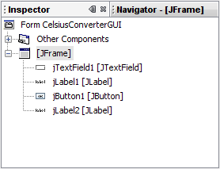
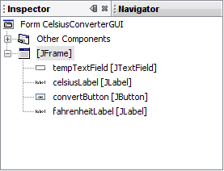
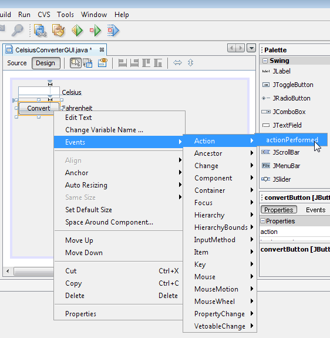
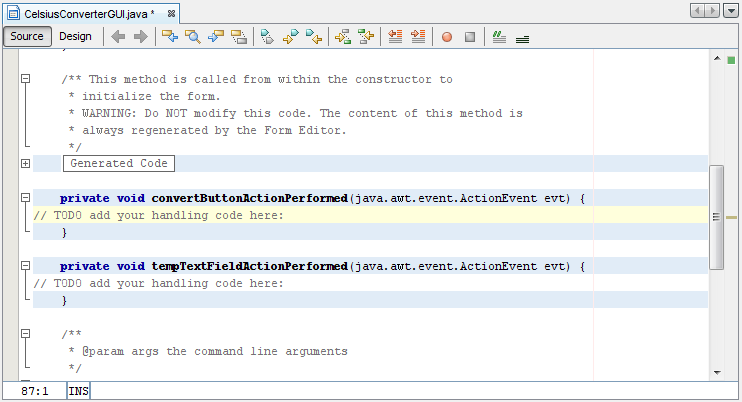
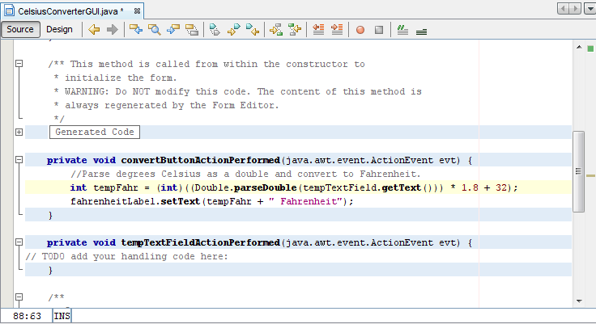

Ahora es el momento de añadir la lógica en la aplicación.
La figura de abajo muestra los nombres de las variables por defecto tal como aparecen actualmente dentro del
Inspector. Para cada componente, el nombre de la variable aparece primero, seguido por el tipo de objeto entre
corchetes. Por ejemplo, jTextField1 [JTextField] significa que "jTextField1" es el nombre
de variable y "JTextField" es su tipo.

Nombres de Variable por Defecto
Los nombres por defecto no son muy relevantes en el contexto de esta aplicación, de forma que tiene sentido cambiarlos por algo que tenga más sentido. Haga click derecho con el ratón en cada nombre de variable y elija "Cambiar nombre de variable." Cuando haya terminado, los nombres de variable aparecerán como sigue:

Nuevos Nombres de Variable
Los nuevos nombres de variable son "tempTextField", "celsiusLabel", "convertButton", y "fahrenheitLabel". Cada cambio que haga en el Inspector se propagará automáticamente de vuelta en el código fuente. Puede estar seguro de que la compilación no fallará debido a errores tipográficos o errores de esa naturaleza — errores que son comunes cuando se edita a mano.
Cuando un usuario final interactúa con un componente Swing del IGU (tal como pulsar el botón Convert), ese componente generará un clase especial de objeto — llamado un objeto evento — el cual retransmitirá a cualesquiera otros objetos que hayan sido registrados a sí mismos previamente como oyentes para ese evento. El EID NetBeans hace la registración de oyentes de evento extremadamente simple:

Esta figura ha sido reducida para que encaje en la página.
Pulse en la imagen para verla en su tamaño natural.
En el Área de Diseño, pulse con el ratón sobre el botón Convert para seleccionarlo. Asegúrese que sólo el botón Convert está seleccionado (si el JFrame en sí mismo está también seleccionado, este paso no funcionará). Haga click derecho con el ratón sobre el botón Convert y elija Eventos -> Acción -> ActionPerformed. Esto generará el código de manejo del evento requerido, dejándole con cuerpos de método vacíos en los cuales añadir su propia funcionalidad:

Esta figura ha sido reducida para que encaje en la página.
Pulse en la imagen para verla en su tamaño natural.
Hay muchos tipos de eventos diferentes representando las diversas clases de acciones que un usuario final puede realizar (pulsar el ratón dispara un tipo de evento, escribir en el teclado dispara otros, mover el ratón también dispara otro, etcétera). Nuestra aplicación sólo se ocupa de ActionEvent; para más información sobre el manejo de eventos, vea Escribiendo Listener Events.
El paso final es simplemente pegar el código de conversión de temperatura en el cuerpo vacío del método. El código siguiente es todo lo que se necesita para convertir una temperatura de Celsius a Fahrenheit:
Este ejemplo no es localizable porque el método parseDouble no es localizable. Este trozo de
código tiene sólo fines ilustrativos. Una implementación más robusta usaría la clase
Scanner para analizar la
entrada del usuario.
//Analiza los grados Celsius como un double y lo convierte a Fahrenheit.
int tempFahr = (int)((Double.parseDouble(tempTextField.getText()))
* 1.8 + 32);
fahrenheitLabel.setText(tempFahr + " Fahrenheit");
Simplemente copie este código y péguelo dentro del método convertButtonActionPerformed como es mostrado debajo:

Esta figura ha sido reducida para que encaje en la página.
Pulse en la imagen para verla en su tamaño natural.
Con el código de conversión en su lugar, la aplicación está ahora completada.
Ejecutar la aplicación es simplemente una cuestión de seleccionar Ejecutar -> Ejecutar Proyecto Principal
dentro del EID NetBeans. La primera vez que ejecute esta aplicación, se le preguntará en un diálogo pidiéndole
establecer CelsiusConverterGUI como la clase principal para este proyecto. Pulse el botón OK, y
cuando el programa termine de compilarse, verá la aplicación ejecutarse en su propia ventana.
¡Felicitaciones! ¡Ha completado su primera aplicación Swing!